Programming, problem solving, and algorithms
CPSC 203, 2026 W1
September 15, 2026
Announcements
Results of course survey.
Updates to CPSC 203 course website.
Monitor (and post to) Piazza.
POTW is available on PrairieLearn.
Enroll in CPSC203 on PrairieTest.
- Book your slot for the first examlet (Thur Oct 1 - Mon Oct 5).
- Students with accommodations: If you cannot see your accommodation when you try to book a slot, email me.
Today’s Plan…
- Correctness isn’t everything…
- Knitting
- Work / effort / complexity
- Simplicity / elegance / abstraction
- Colour (if we get to it)
Correctness isn’t Everything
Let’s Go Shopping (version 1)
define shopping_trip1(grocery_list: List[food_item])
-> pantry_list: List[food_item]:
# List of food in the pantry so far.
pantry_list = []
for item_on_grocery_list in grocery_list:
# Take paper with single item to the store.
item_at_store = go_to_store(item_on_grocery_list)
# Get the item from the shelf.
item_in_cart = pick_at_store(item_at_store)
# Bring the item home.
item_at_home = return_from_store(item_in_cart)
# Put the item away.
pantry_list.append(put_in_pantry(item_at_home))
return pantry_listI am being sloppy here by assuming that the helper functions can accept (and will return) either a single item or a list of items
If we have \(n\) items in our list, how long does this procedure take?
Let’s Go Shopping (version 2)
define shopping_trip2(grocery_list: List[food_item])
-> pantry_list: List[food_item]:
# Take piece of paper with list to the store.
grocery_list_at_store = go_to_store(grocery_list)
# Get all items on the list into the cart.
cart_list = []
for item_at_store in grocery_list_at_store:
cart_list.append(pick_at_store(item_at_store))
# Bring the items home.
grocery_bags_at_home = return_from_store(cart_list)
# Put the items away.
pantry_list = []
for item_at_home in grocery_bags_at_home:
pantry_list.append(put_in_pantry(item_at_home))
return pantry_listIf we have \(n\) items in our list, how long does this procedure take?
Handcraft
Handcraft
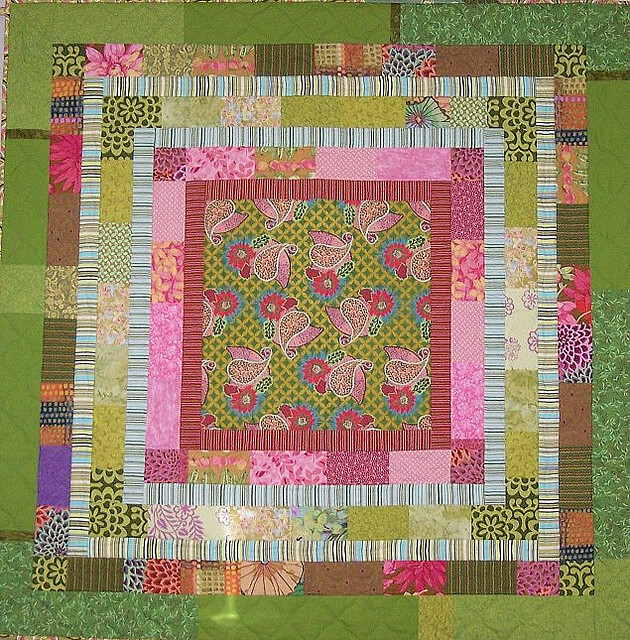
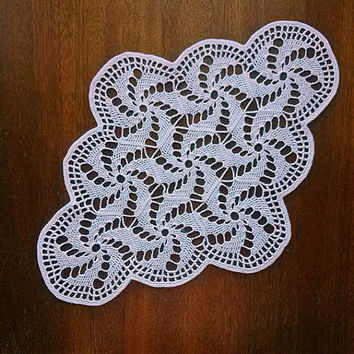
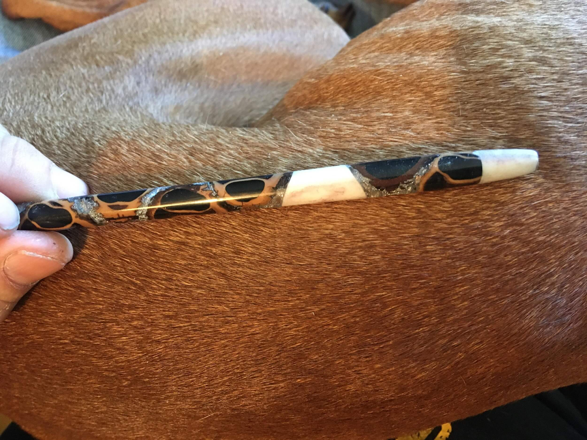
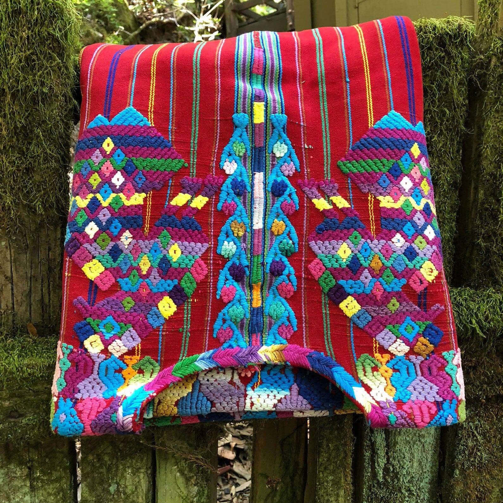
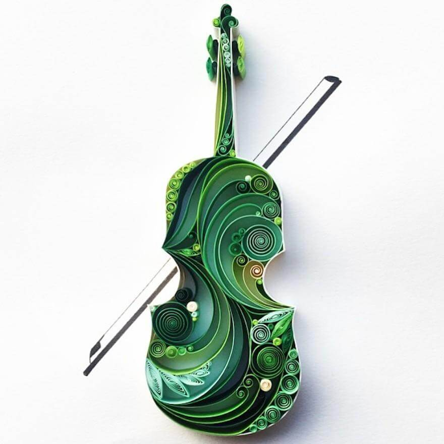
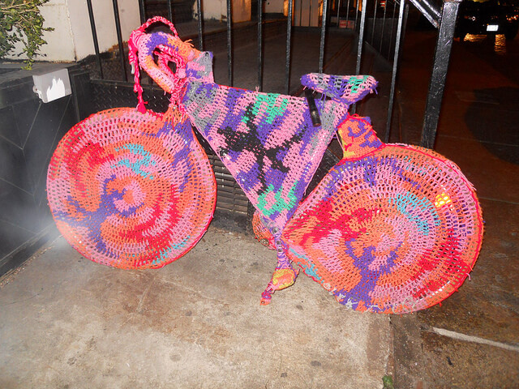
Knitting
The language used to communicate patterns uses exactly the same fundamental constructs as Python!!!
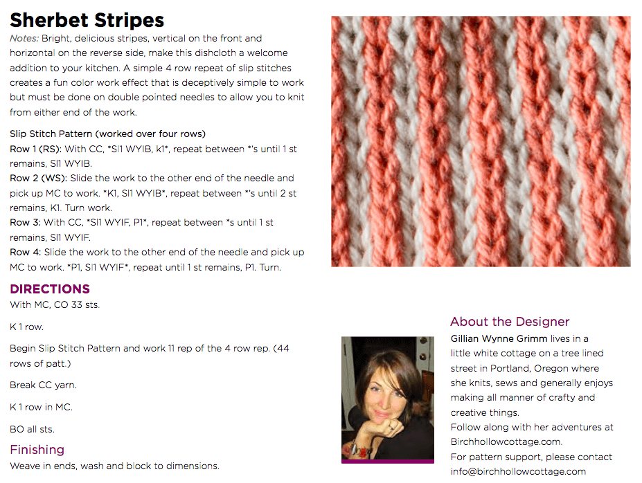
Knitting: examples
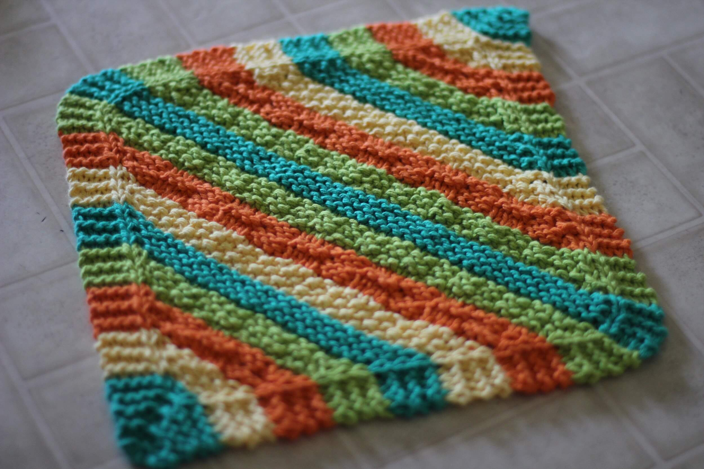
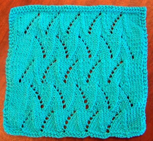
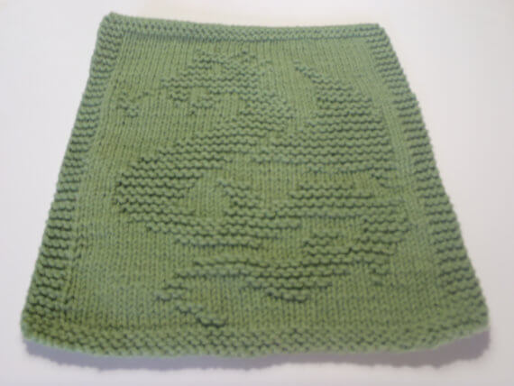
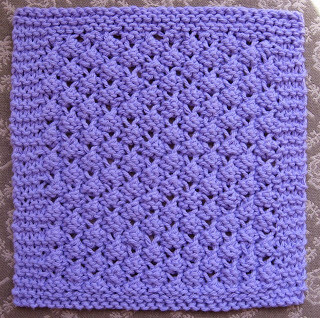
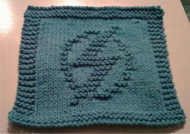
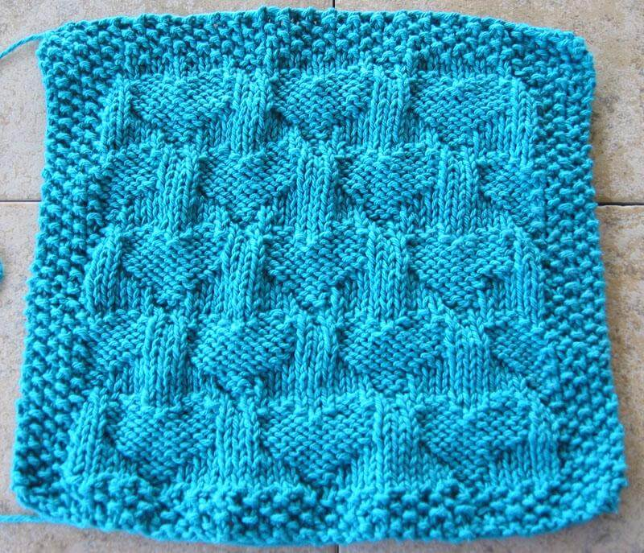
Quantifying the Task
- If we describe one dimension of a square rag by \(n\), how much work is done by the knitter? ____________
- If we have enough yarn for 36,000,000 stitches, what is the largest rag we could make? ____________
- If each stitch takes a second, what is the largest rag we could make in one evening? ____________
- If it takes an evening to make a \(40 \times 40\) rag, how long will it take to make an \(80 \times 80\) rag? ____________
- If it takes time \(t\) to make an \(n\) by \(n\) rag, how long will it take to make a \(3n \times 3n\) rag? ____________
General idea: quantify the size of the problem (\(n\)) and consider the cost of our task as that size increases.
Quantifying the task…
If we are solving a problem / writing an algorithm for an input of arbitrary size, we can parameterize the running time of the solution by the size of the input.
We usually denote this input size using the variable \(n\).
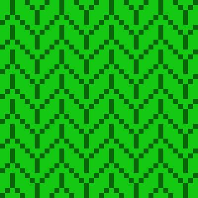
- We need to specify what \(n\) represents (in this case the length of each side of the square).
- Sometimes we need multiple parameters to describe the size of the problem (such as \(n\) and \(m\)).
- We pay attention to only the degree of n (so if a scarf takes \(3n^2 + 12n\) time, we are only interested in the fact it is \(n^2\))
Simplicity is the ultimate sophistication. It takes a lot of hard work to make something simple, to truly understand the underlying challenges and come up with elegant solutions. […] It’s not just minimalism or the absence of clutter. It involves digging through the depth of complexity. To be truly simple, you have to go really deep. […] You have to understand the essence of a product in order to be able to get rid of the parts that are not essential.
— Steve Jobs
Analyzing Complexity
Handcraft and Code
Knitting model:
Side length is \(n\)
One stitch is a unit of work
\(n\) rows, \(n\) stitches per row
Total work is \(n^2\)
Quantifying the task…
Suppose we can knit 1 (= 100) stitches per second….
The degree (in n) makes a very big difference!
| time \ n | 10 | 100 | 1000 |
|---|---|---|---|
| log n | ~3 s | ~6½ s | ~10 s |
| n | 10 s | 102 s ~ 1½ min | 103 s ~ 16½ min |
| n log n | 3(10) s ~ ½ min | 6(102) s ~ 10 min | 104 s ~ 2½ hours |
| n2 | 100 s ~ 1½ min | 104 s ~ 2½ hours | 106 s ~ 11½ days |
| n3 | 1000 s ~ 16½ min | 106 s ~ 11½ days | 109 s ~ 31½ years |
| 2n | 1024 s ~ 17 min | ~1030 s | ~10301 s |
Notes: “log” = log_2 and the age of the universe: ~10^18 s
Quantifying the task…
But computers are much faster. Suppose we can “knit” 1012 stitches / s
The amount of computation we do inside our algorithm actually matters!
| time \ n | 10 | 100 | 1000 | 106 | 1012 |
|---|---|---|---|---|---|
| log n | ~3(10-12) s | ~6½(10-12) s | ~10(10-12) s | ~20(10-12) s | ~40(10-12) s |
| n | 10-11 s | 10-10 s | 10-9 s | 10-6 s | 1 s |
| n log n | 3(10-11) s | 6(10-10) s | 10-8 s | ~20(10-6) s | ~40 s |
| n2 | 10-10 s | 10-8 s | 10-6 s | 1 s | 1012 s |
| n3 | 10-9 s | 10-6 s | 10-3 s | 106 s | 1024 s |
| 2n | ~10-9 s | ~1018 s | ~10289 s |
Notes: proteins fold in ~10-6 s and the age of the universe: ~1018 s
Colour
Colour Interpretation

How does light wavelength become colour? Biological interpretation
What’s your favorite colour? Psychological interpretation
Does that colour influence your dress/decor/purchases? Cultural interpretation